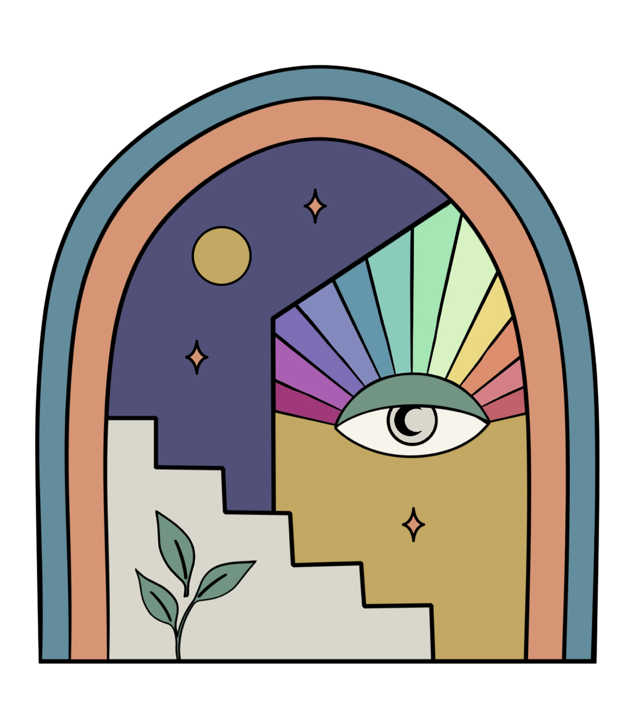
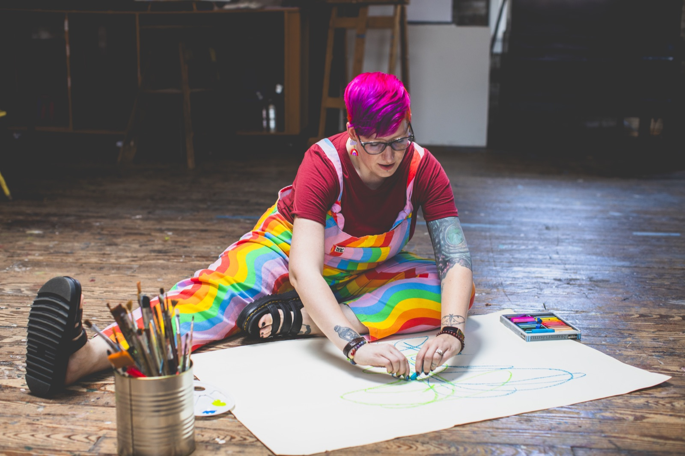

Mindful Moon Therapy
Life is hard. Let's make some art about it.
You can't always think your way through something. Sometimes you have to feel your way through it. The moon has always been tied to the parts of us that move beneath the surface. That's where art works. This space is for creative practice, reflection, and people who'd rather see your mess than your highlight reel.


Intuitive Art Making
Intuitive art making is about letting go of preconceived ideas of what it means to be creative and following what is asking to come through. The materials become a channel for what lies beneath the surface, helping you access emotions and experiences that can be hard to name out loud. Releasing control, trusting your intuition, and staying with what unfolds can open up a different kind of knowing.
Offerings
About
I'm Bethanie Bright 🌈✨🎨
I make art for a living and I also make art so I don't lose my mind. Most days those are the same thing.
I spent years keeping the peace, swallowing what I actually thought, and being "fine." My body finally said no. I got sick, and the sickest part is that it took an autoimmune disease for me to start telling myself the truth. An art journal is what got me out. Therapy and other interventions were helpful. But none of it cracked me open the way the page did.
I'm a licensed therapist and a registered art therapist, so the research backs this up. But in this space, I show up as a fellow artist first, not a clinician. I still keep a sketchbook of my own, and I still need it.
Art & Alchemy
Alchemists spent their whole lives trying to turn lead into gold. Most people thought they were wasting their time. They knew something the rest of us forget, that the raw, ugly material is exactly where the gold comes from.
You're doing the same work every time you sit down and create. The lead is whatever you've been carrying. The gold is what's left after you finally let it out.
Art and alchemy were never really two different things.
Mindful Moon
"The sun heals me, but the moon feels me."
There's a version of you that only shows up at night, when the house goes quiet and nobody's watching and you can finally stop holding your face together. This space is for that version of you.
Sun healing is the easy kind, vitamin D, a walk, a green smoothie. Moon healing is what happens when you're alone with everything you carried all day and you finally let it land.
That's the moon in Mindful Moon.